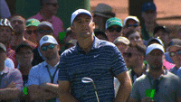
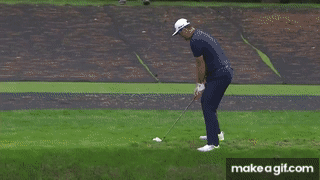
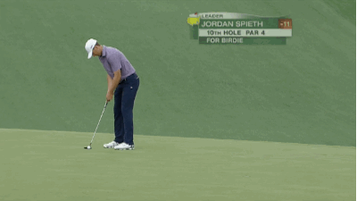
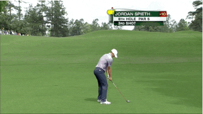
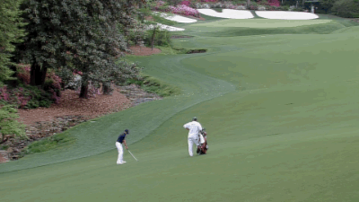
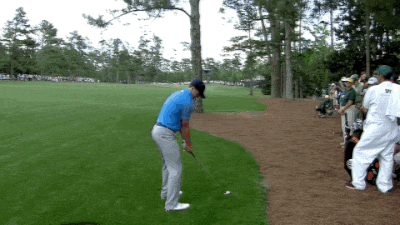
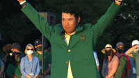

hello everyone, and welcome to my first ever masters preview.
the masters is golf's first major tournament of the year, and also probably the best one. it's the only week where i feel totally justified in being annoying about golf.
although the masters is the youngest of golf's majors, it's represented the pinnacle of tournament golf for as long as it's been around. the masters helped shape how golf is presented on TV, but that's not where the innovation stops. Today they run an incredible website where you can watch every shot and multiple live feeds of the action for free.
if you haven't already, please join my fantasy league. all you have to do is pick four golfers that you think will be good this week. or you can just pick who you like.
this will not be a long preview, i just want to highlight a few players that i will be watching this week. and i'll also be recommending some players in case you are not sure of who to pick. here we go:
favorites
scottie scheffler

remember when you filled out your march madness bracket a few weeks ago and saw that almost everyone was picking UConn to make the final four? Picking Scottie this week is the golf version of that.
scottie scheffler won the masters in 2022, and since then he's only gotten better. statistically, scottie is having a season that we haven't seen since tiger woods. wow!
if you have four golfers to pick, scottie has to be one of them. it's the safe pick, maybe, but if he's not in the top 10 this week i would be extremely surprised.
rory mcilroy
rory mcilroy is a phenomenal golfer who has come so, so close to winning this tournament multiple times, including in 2022. in 2011, rory had a great chance to win, but then threw up all over himself, figuratively speaking, on the back nine. that was tough.
the thing is, rory has won every other major besides the masters. so he always has some extra pressure this week to win what they call the grand slam, or all four majors.
is he gonna do it this week? maybe! never say never! he's been playing well as of late. he's a good pick this week.
jon rahm

jon rahm is the defending champion of the masters! he's also in good form heading into the week.
repeating at the masters is hard. like really hard. the last time anyone did it was tiger woods in 01-02. the last time anyone came close...well...i don't really want to talk about it.
jordan spieth 2016
anyway, rahm is a fine pick this week. of the top three players in the world, i would be least confident in picking him. but that's only because it's hard to win this thing twice in a row, and also rahm plays on a different tour then these other guys, which i can't get into if i want this preview to be short. so i'm not crazy about rahm this week, but you do you, you know?
other guys i want to talk about
jordan spieth




RAHHHHHHHHHH
jordan spieth. 2015 masters champion. should have been the champion in 2014, 2016, and 2018. this guy should have like 5 green jackets by now.
jordan spieth is a notoriously streaky golfer. he is so fun to watch and also so frustrating. he will probably make a ton of birdies this week but then double bogey a hole that he shouldn't.
some would say that he's not the best. maybe there is some truth to that. but he always shows out for augusta and i'm never picking against him. WE RIDE.
hideki matsuyama

hideki. let's talk about hideki. 2021 masters champion. and you know what? somehow i feel like he is getting overlooked a litte!
hideki is one of the best ballstrikers on the planet with the unique ability to get super, super hot. he did it at this tournament in 2021. he did it this year at the genesis open. a sneaky little top ten finish last week at the valero texas open. just something to consider.
i might pick hideki this week. maybe. not sure. he's not a dark horse, but people like to talk about rory, jordan, etc. a lot more than him. maybe he won't win, but i'm willing to bet on a high finish.
lightning round!!
i said i would make this preview short so i will just start listing people that i might pick and think you should watch. "R" next to someone's name means they are a masters rookie and so it's a bit of a risky pick since rookies don't really win the masters ever. ok here we go
ludvig aberg R
sergio garcia
wyndham clark R
shane lowry
denny mccarthy R
brooks koepka
xander schauffele
joaquin niemann
people you shouldn't pick in my opinion
not to hate but here is a quick list of people i would avoid this week. i actually like a lot of these players i just don't think they've been playing all that well lately.
justin thomas
rickie fowler
any amateur player
collin morikawa
tom kim
TIGER WOODS i'm sorry to say
and with that my preview is finished! have a wonderful week everybody!